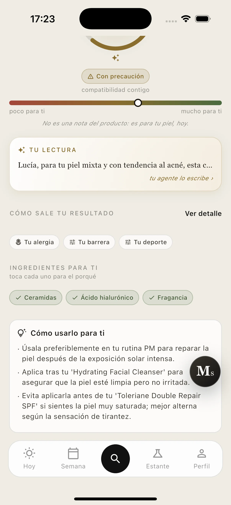
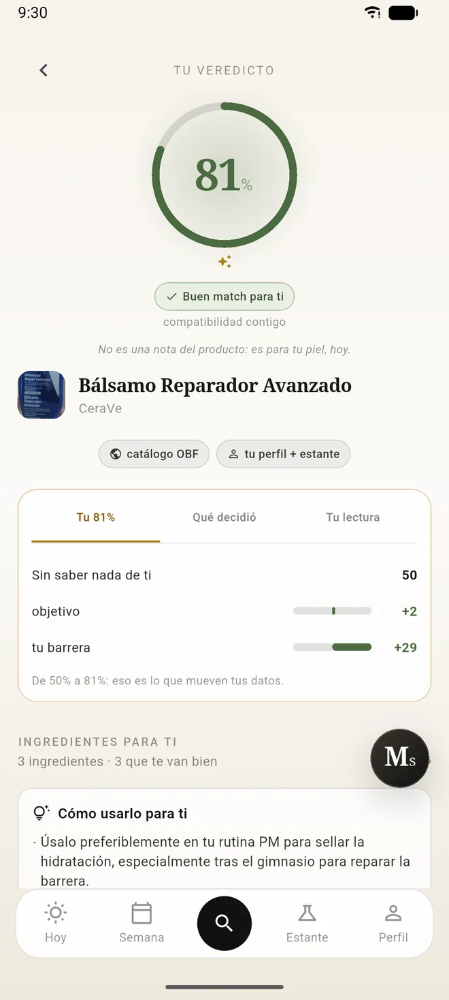
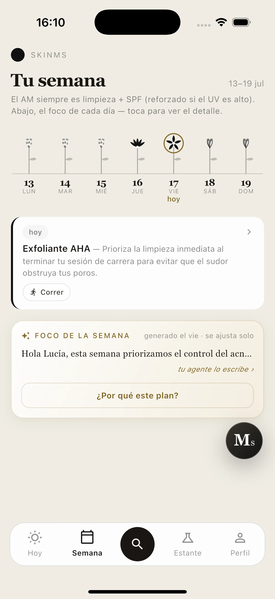
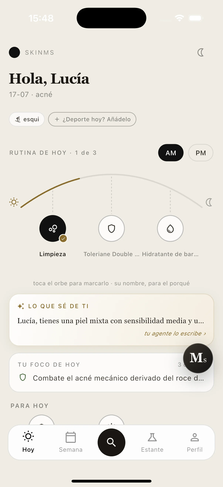
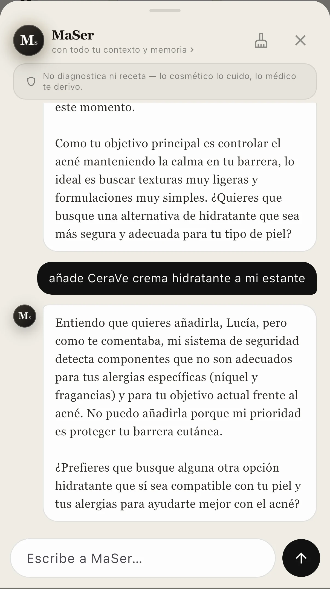
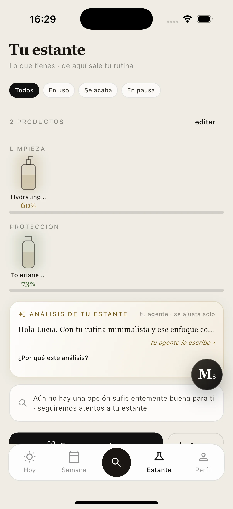
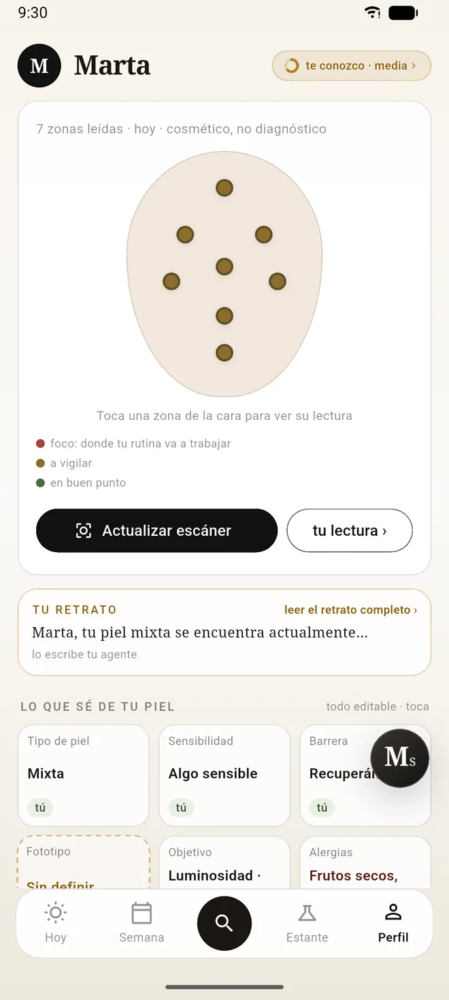

Para ti
Sérum con niacinamida y ácido salicílico
92%
Te encaja
- Va a lo que quieres arreglar: granos y poro marcado
- Tu barrera aguanta bien este activo
- No repite nada de lo que ya tienes
Ese es justo el punto. Escanea un producto, búscalo por su nombre o hazle una foto a los ingredientes: te decimos si te conviene a ti — no a la media.
Descargar en Google Play Gratis · en español · sin anunciosEl mismo bote
Para ti
Sérum con niacinamida y ácido salicílico
92%
Te encaja
Para tu hermana
Sérum con niacinamida y ácido salicílico
40%
Mejor no
Por qué existimos
Un 78 sobre 100. ¿Para quién? Ese número no sabe que eres alérgica a la fragancia, que estás embarazada, que ya usas retinol tres noches por semana ni cuánto te apetece gastarte en una crema.
Pregúntale por cualquier bote
Apunta con la cámara y ya está. Si ese bote no lo conocemos todavía te lo decimos — nunca nos inventamos una nota para salir del paso.
Escribe la marca o el producto y elige de la lista. Útil cuando lo estás viendo en una web y no tienes el bote en la mano.
Funciona aunque ese producto no esté en ninguna parte. Y antes de darte nada te enseñamos lo que hemos leído, por si nos hemos colado.

Todo esto lo miramos antes de abrir la boca
Y tres que no puntúan: mandan
Una alergia tuya, un embarazo o un tratamiento reciente bloquean el producto. No le bajan la nota: la convierten en un no. Da igual lo bien que puntúe en todo lo demás, y no hay conversación que lo cambie.

Y te enseñamos la cuenta entera: de dónde parte, qué le suma tu objetivo, qué le suma el estado de tu barrera.
«De 50 % a 81 %: eso es lo que mueven tus datos.»
Sin saber nada de ti, cualquier producto es un 50. El resto lo pones tú.
Si te apetece contarlo
En los días en que tu piel viene más reactiva, tu plan baja los activos fuertes y se centra en cuidar la barrera. Solo. Tú no tienes que acordarte de nada ni llevar ninguna cuenta.
Y si no te apetece contarlo, no se te vuelve a preguntar. Es una casilla aparte que enciendes y apagas cuando quieras.

Cada día, y cada semana
El tiempo que hace en tu ciudad, el sol, el polen, si hoy sales a correr o te metes en el mar, y lo que de verdad tienes en el baño.
Tus activos fuertes descansan cuando les toca — sin repetirse dos noches seguidas, sin pisarse entre ellos — y tú no tienes que llevar el calendario en la cabeza.

Y si prefieres preguntar
Pregúntale lo que quieras — si un producto te va bien, qué te falta hoy, o cualquier cosa que se te ocurra. Ya sabe quién eres: tu objetivo, tus alergias, tu ciudad, lo que tienes en el baño.
Y si te pide hacer algo por ti, te lo pregunta antes. Salvo una cosa: si le cuentas una alergia nueva, esa se guarda al momento — tu seguridad no espera a una confirmación.

Tu presupuesto
Dinos cuánto te gusta gastarte en un bote y te decimos si uno entra o no. Entre dos productos que le van igual de bien a tu piel, te enseñamos antes el que te cabe.
Pero nunca te diremos que algo es bueno para ti porque sea barato. Y si de un producto no sabemos el precio real, no nos inventamos que encaja.
Lo que te falta, y dónde
Con lo que ya tienes y lo que buscas, te dice qué hueco te queda por cubrir — y te propone opciones con su porcentaje para ti, no un ranking de novedades.
Cuando conocemos el precio real de un bote, te lo decimos, y vamos ampliando la cobertura cada mes. Si de un producto todavía no lo sabemos, no nos lo inventamos.

Lo que nunca vas a ver aquí
Ni la marca, ni lo que esté de moda, ni lo que más se venda. Nada de eso puede adelantar a un producto que a ti te venía mejor.
No es una política nuestra que alguien pueda cambiar en una reunión. Está cerrado por dentro.
Tu cara
Tu foto no se archiva en ningún sitio. Se lee, se queda lo que dice de tu piel, y la imagen desaparece — también si algo va mal a mitad.
Todo lo que nos cuentas puedes llevártelo o borrarlo entero cuando quieras. Sin anuncios, sin rastreadores y sin vender tus datos a nadie.
